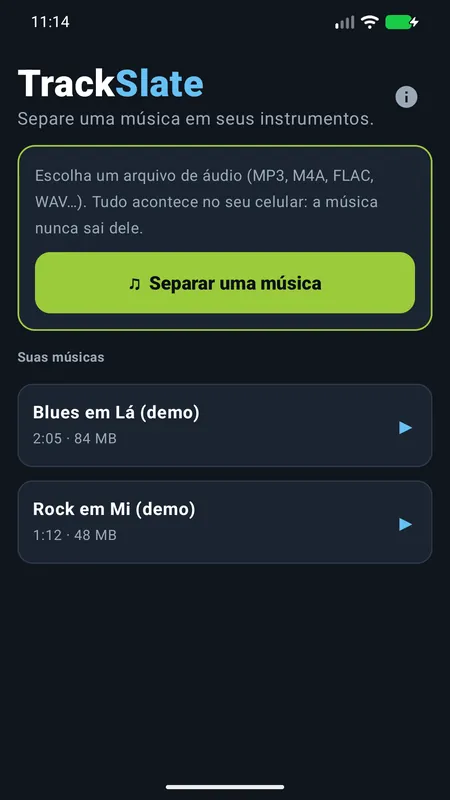
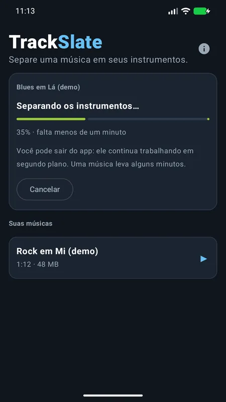
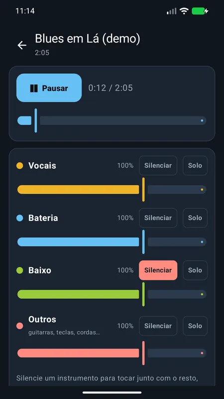
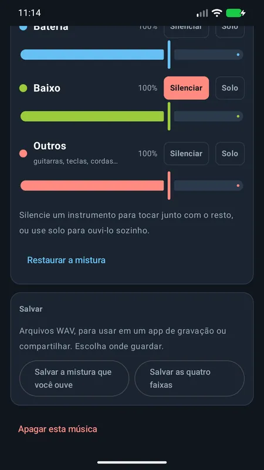

1 · Escolha
Um arquivo de áudio
MP3, M4A, FLAC, WAV e outros, dos seus arquivos ou compartilhados de outro app. Uma música pode levar alguns minutos, e o trabalho continua em segundo plano.
Escolha um arquivo de áudio e o TrackSlate separa os vocais, a bateria, o baixo e todo o resto com uma rede neural que roda no seu celular: sem envio, sem conta. Depois silencie um instrumento para tocar a parte dele você mesmo, ou ouça um em solo para aprendê-lo. Disponível em português e inglês.




MP3, M4A, FLAC, WAV e outros, dos seus arquivos ou compartilhados de outro app. Uma música pode levar alguns minutos, e o trabalho continua em segundo plano.
Vocais, bateria, baixo e outros (guitarras, teclas, cordas…), feitos no seu celular. Não é perfeito: um pouco de um instrumento pode ficar em outro.
Abaixe ou desligue um instrumento para tocar a parte dele você mesmo, ou ouça-o em solo para aprender. Salve a mistura que você ouve ou as quatro faixas em WAV.
O TrackSlate não exige conta, e suas músicas nunca saem do seu celular. Use-o apenas com músicas que são suas ou que você tem permissão para usar, como suas próprias gravações ou faixas licenciadas, e não compartilhe faixas separadas de músicas sobre as quais você não tem direitos. A separação usa o modelo HT Demucs, de Alexandre Défossez e da Meta AI Research (código com licença MIT), rodando no ONNX Runtime (MIT). O TrackSlate é independente e não é afiliado a eles nem a nenhum artista; ele não fornece nem baixa nenhuma música.
Suporte: gameslate@proton.me
Encontre seu próximo grande jogo.
Descubra jogos de PC com atividade de jogadores, avaliações e contexto de compatibilidade com Linux, tudo em um só lugar.
Leu 15? Receba 3 ótimos.
Diga até 15 livros que você leu e receba 3 sugestões do que ler em seguida. Em português e inglês.
Afine. Regule. Toque.
Afinador e guias de regulagem passo a passo para violão e guitarra, com assistente de oitavação. Em português e inglês.
Uma banda ao vivo no seu bolso.
Uma banda de acompanhamento que toca blues, pop, rock, valsa e jazz no tom e andamento que você escolher, com cifras, escalas e posições de acorde. Em português e inglês.
Escreva. Toque. Grave.
Um caderno de compositor com banda: digite acordes e letra, ouça tocando, grave sua voz ou violão por cima e compartilhe o resultado. Em português e inglês.